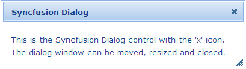

The Dialog supports customizing the dimensions on load.
Using Builder
The following steps explain the setting of the dimensions of Dialog using Builder.
1. In View, create the contents of the dialog and invoke the dialog helper with the Control ID as the first argument followed by the Height and Width methods with the desired dimensions as arguments.
|
[ASPXView[aspx]
<div id="dialogContents" title="Syncfusion Dialog" style="visibility: hidden"> This is the Syncfusion Dialog control with the 'x' icon. The dialog window can be moved, resized and closed. </div> <%=Html.Syncfusion().Dialog("myDialog") .TargetControlId("dialogContents") .Height(75) .Width(400)%>
|
|
View[cshtml]
<div id="dialogContents" title="Syncfusion Dialog" style="visibility: hidden"> This is the Syncfusion Dialog control with the 'x' icon. The dialog window can be moved, resized and closed. </div> @{ Html.Syncfusion().Dialog("myDialog") .TargetControlId("dialogContents") .Height(75) .Width(400).Render();}
|
2. Build and run the application.
Using Properties Model
The following steps explain the setting of the dimensions of Dialog using the Properties model.
1. In the Controller, create an instance of DialogModel, define the Height and Width and pass the instance through View Specific Data to View as given below.
|
[Controller]
public ActionResult Index() { //create an instance of DialogModel DialogModel myModel = new DialogModel(); myModel.TargetControlId = "dialogContents"; myModel.Height = 75; myModel.Width = 400;
//pass the instance through view data to the view ViewData["myDialog"] = myModel; return View(); }
|
2. In View, create the dialog contents and invoke the dialog helper with the View Data key as the first argument.
|
[ASPXView[aspx]
<div id="dialogContents" title="Syncfusion Dialog" style="visibility: hidden"> This is the Syncfusion Dialog control with the 'x' icon. The dialog window can be moved, resized and closed. </div> <%=Html.Syncfusion().Dialog("myDialog")%>
|
|
View[cshtml]
<div id="dialogContents" title="Syncfusion Dialog" style="visibility: hidden"> This is the Syncfusion Dialog control with the 'x' icon. The dialog window can be moved, resized and closed. </div> @{ Html.Syncfusion().Dialog("myDialog").Render();}
|
3. Build and run the application.
The output is displayed in the following screenshot.

Figure 117: Dialog with customized dimensions